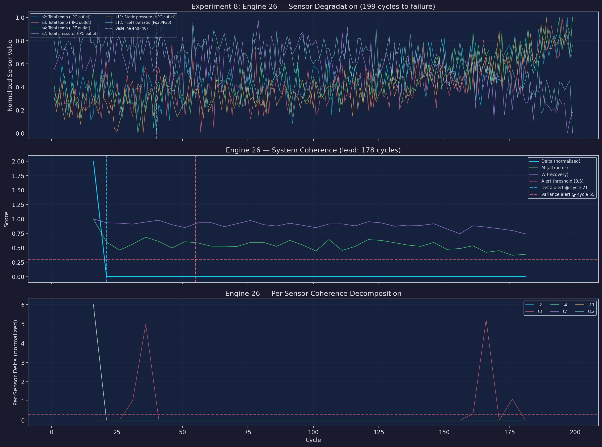
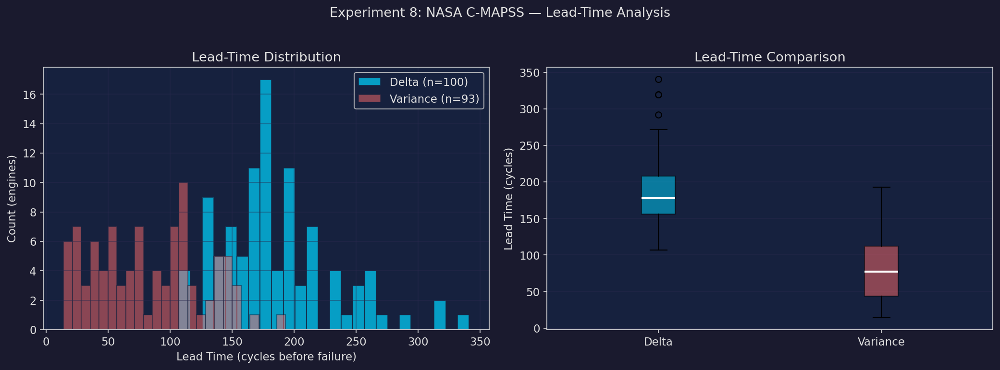
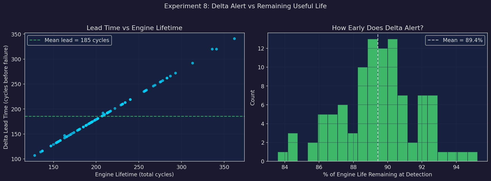
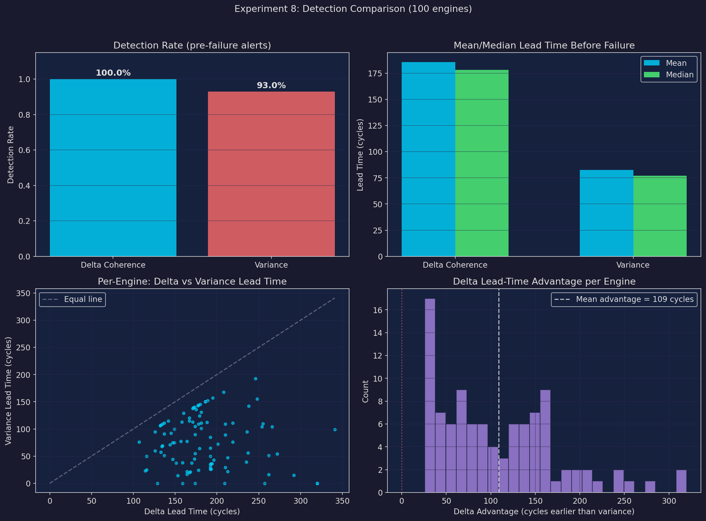
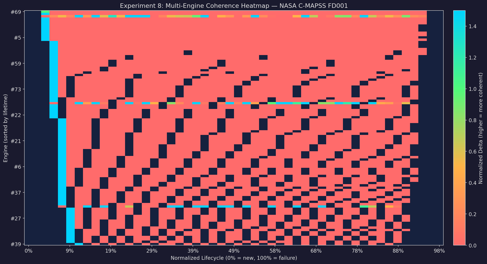

Key Results
Across 100 NASA C-MAPSS turbofan engines, the Δ coherence metric achieved 100% detection rate with a mean lead time of 185 cycles before failure. Variance-based detection caught 93% of failures with only 83 cycles mean lead. On average, Δ alerts 109 cycles earlier than variance — with 89% of engine life still remaining at first alert.
Method Comparison
Δ Coherence
Detection rate: 100%
Mean lead: 185 cycles
Median lead: 178 cycles
Missed: 0 engines
Variance
Detection rate: 93%
Mean lead: 83 cycles
Median lead: 77 cycles
Missed: 7 engines
Experiment Plots
Example Engine Degradation — Engine #26

Lead-Time Distribution

Δ Alert vs Remaining Useful Life

Detection Comparison: Δ vs Variance

Multi-Engine Coherence Heatmap

Notable Engines
Largest Δ advantage (top 5)
| Engine | Lifetime | Δ Lead | Var Lead | Advantage |
|---|---|---|---|---|
| #92 | 341 | 320 | 0 | +320 |
| #96 | 336 | 320 | 0 | +320 |
| #67 | 313 | 292 | 15 | +277 |
| #86 | 278 | 257 | 0 | +257 |
| #95 | 283 | 262 | 16 | +246 |
Smallest Δ advantage (bottom 5)
| Engine | Lifetime | Δ Lead | Var Lead | Advantage |
|---|---|---|---|---|
| #29 | 163 | 142 | 115 | +27 |
| #27 | 156 | 135 | 109 | +26 |
| #36 | 158 | 137 | 111 | +26 |
| #65 | 153 | 132 | 106 | +26 |
| #77 | 154 | 133 | 107 | +26 |
All Engines
Show all 100 engines
| Engine | Lifetime | Δ Lead | Var Lead | Advantage |
|---|---|---|---|---|
| #1 | 192 | 171 | 113 | +58 |
| #2 | 287 | 266 | 104 | +162 |
| #3 | 179 | 158 | 113 | +45 |
| #4 | 189 | 168 | 21 | +147 |
| #5 | 269 | 248 | 155 | +93 |
| #6 | 188 | 167 | 120 | +47 |
| #7 | 259 | 238 | 142 | +96 |
| #8 | 150 | 129 | 0 | +129 |
| #9 | 201 | 180 | 145 | +35 |
| #10 | 222 | 201 | 72 | +129 |
| #11 | 240 | 219 | 76 | +143 |
| #12 | 170 | 149 | 100 | +49 |
| #13 | 163 | 147 | 75 | +72 |
| #14 | 180 | 159 | 38 | +121 |
| #15 | 207 | 186 | 150 | +36 |
| #16 | 209 | 188 | 112 | +76 |
| #17 | 276 | 255 | 110 | +145 |
| #18 | 195 | 174 | 105 | +69 |
| #19 | 158 | 137 | 91 | +46 |
| #20 | 234 | 213 | 22 | +191 |
| #21 | 195 | 174 | 55 | +119 |
| #22 | 202 | 181 | 131 | +50 |
| #23 | 168 | 147 | 44 | +103 |
| #24 | 147 | 126 | 60 | +66 |
| #25 | 230 | 209 | 0 | +209 |
| #26 | 199 | 178 | 144 | +34 |
| #27 | 156 | 135 | 109 | +26 |
| #28 | 165 | 144 | 71 | +73 |
| #29 | 163 | 142 | 115 | +27 |
| #30 | 194 | 173 | 140 | +33 |
| #31 | 234 | 213 | 47 | +166 |
| #32 | 191 | 170 | 37 | +133 |
| #33 | 200 | 179 | 64 | +115 |
| #34 | 195 | 174 | 0 | +174 |
| #35 | 181 | 160 | 129 | +31 |
| #36 | 158 | 137 | 111 | +26 |
| #37 | 170 | 149 | 75 | +74 |
| #38 | 194 | 173 | 45 | +128 |
| #39 | 128 | 107 | 76 | +31 |
| #40 | 188 | 167 | 20 | +147 |
| #41 | 216 | 195 | 157 | +38 |
| #42 | 196 | 175 | 136 | +39 |
| #43 | 207 | 186 | 150 | +36 |
| #44 | 192 | 171 | 138 | +33 |
| #45 | 158 | 137 | 51 | +86 |
| #46 | 256 | 235 | 39 | +196 |
| #47 | 214 | 193 | 26 | +167 |
| #48 | 231 | 210 | 89 | +121 |
| #49 | 215 | 194 | 36 | +158 |
| #50 | 198 | 177 | 143 | +34 |
| #51 | 213 | 192 | 30 | +162 |
| #52 | 213 | 192 | 50 | +142 |
| #53 | 195 | 174 | 90 | +84 |
| #54 | 257 | 236 | 95 | +141 |
| #55 | 193 | 172 | 139 | +33 |
| #56 | 275 | 254 | 104 | +150 |
| #57 | 137 | 116 | 25 | +91 |
| #58 | 147 | 126 | 95 | +31 |
| #59 | 231 | 210 | 109 | +101 |
| #60 | 172 | 151 | 37 | +114 |
| #61 | 185 | 164 | 77 | +87 |
| #62 | 180 | 159 | 0 | +159 |
| #63 | 174 | 153 | 14 | +139 |
| #64 | 283 | 262 | 51 | +211 |
| #65 | 153 | 132 | 106 | +26 |
| #66 | 202 | 181 | 111 | +70 |
| #67 | 313 | 292 | 15 | +277 |
| #68 | 199 | 178 | 24 | +154 |
| #69 | 362 | 341 | 99 | +242 |
| #70 | 137 | 116 | 50 | +66 |
| #71 | 208 | 192 | 26 | +166 |
| #72 | 213 | 192 | 65 | +127 |
| #73 | 213 | 192 | 85 | +107 |
| #74 | 166 | 145 | 92 | +53 |
| #75 | 229 | 208 | 168 | +40 |
| #76 | 210 | 189 | 152 | +37 |
| #77 | 154 | 133 | 107 | +26 |
| #78 | 231 | 210 | 29 | +181 |
| #79 | 199 | 178 | 109 | +69 |
| #80 | 185 | 164 | 17 | +147 |
| #81 | 240 | 219 | 111 | +108 |
| #82 | 214 | 193 | 36 | +157 |
| #83 | 293 | 272 | 54 | +218 |
| #84 | 267 | 246 | 193 | +53 |
| #85 | 188 | 167 | 115 | +52 |
| #86 | 278 | 257 | 0 | +257 |
| #87 | 178 | 157 | 77 | +80 |
| #88 | 213 | 192 | 35 | +157 |
| #89 | 217 | 196 | 43 | +153 |
| #90 | 154 | 133 | 57 | +76 |
| #91 | 135 | 114 | 23 | +91 |
| #92 | 341 | 320 | 0 | +320 |
| #93 | 155 | 134 | 68 | +66 |
| #94 | 258 | 237 | 56 | +181 |
| #95 | 283 | 262 | 16 | +246 |
| #96 | 336 | 320 | 0 | +320 |
| #97 | 202 | 181 | 101 | +80 |
| #98 | 156 | 135 | 69 | +66 |
| #99 | 185 | 164 | 22 | +142 |
| #100 | 200 | 179 | 124 | +55 |
Dataset
NASA C-MAPSS FD001 — Commercial Modular Aero-Propulsion System Simulation. 100 turbofan engines run to failure under a single operating condition (sea level). 21 sensor channels + 3 operational settings per cycle. Mean lifetime: 206 cycles. Source: NASA Prognostics Center of Excellence.
Configuration — Baseline: first 20% of cycles. Window: 30 cycles, step 5. Δ threshold: 0.3. Sensors: s2, s3, s4, s7, s11, s12 (highest degradation signal).
Navigation